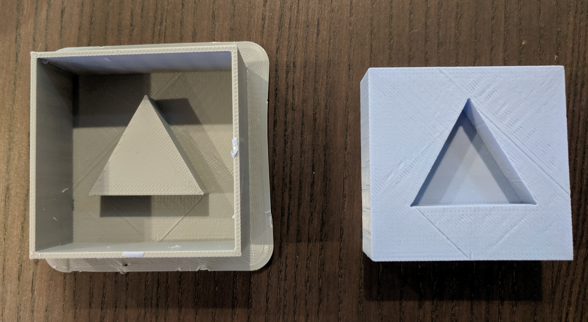
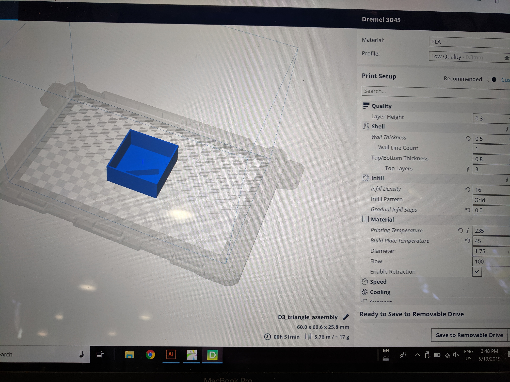
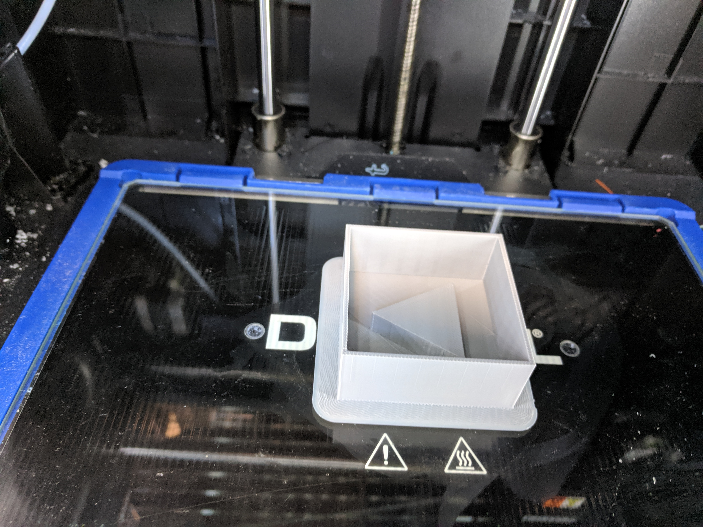
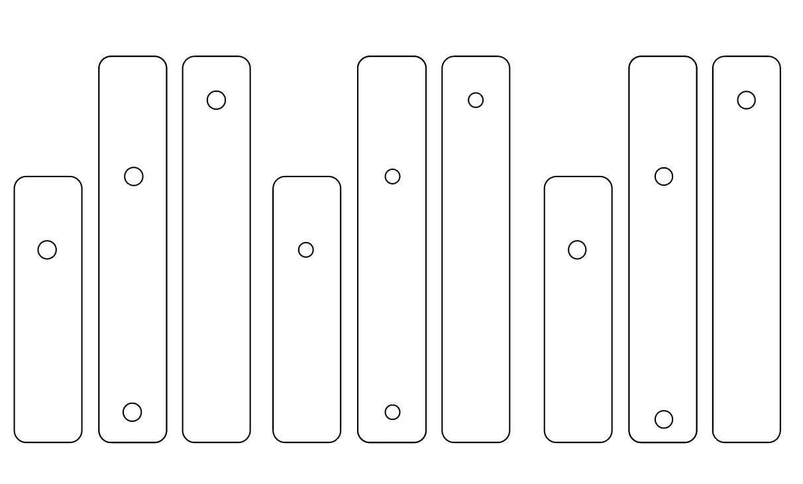
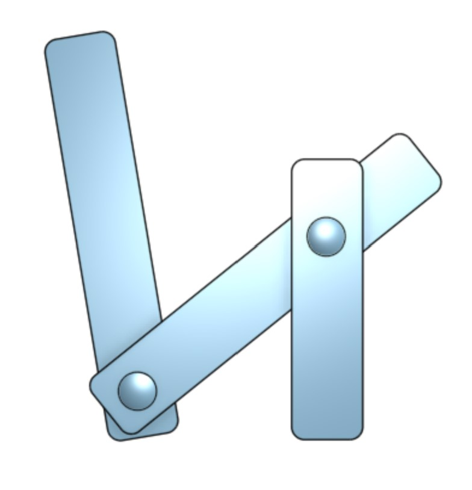

Assignment 6: Molding & Casting a Triangle

For this assignment, I created a simple piston with 3 parts & 2 fastners.
Source Files
Printer settings
Laser Printing settings: 100% power, 20% speed, 50% freq.I browsed many CAM designs, & basic mechanisms. In the end, I decided to go with a simple piston design.
3D Printing
After creating the file on OnShape, I used Dremel to prepare the file to print. While converting from OnShape to Dremel, I had to resize and increase dimensions.




AI & OnShape
I decided to create the files on AI and then imported it to OnShape in DXF format

I had a hard time manipulating the imported file on OnShape, to extrude it. Finally, I was able to troubleshoot it. I used the AI file to laser cut

Final Output

Issues encountered & lessons learnt
If I was to do this again, I would start with OnShape. Since I was somewhat more famililar with AI vs. OnShape, I ended up going down the export/import route. While OnShape seems simpler than Rhino, I didn't find it super intuitive to use.
Peer Attributions
Thank you Julie T Do for talking through designing the mold of the mold using 3D printing + helping with OnShape & converting the file in Dremel.
Thank you Christa Keizer for your help with OnShape & brainstorming the approach to creating a mold of the mold using OnShape.
Thank you Leo for your suggestions about creating 2 silicone molds, so we can create plaster outputs in parallel.